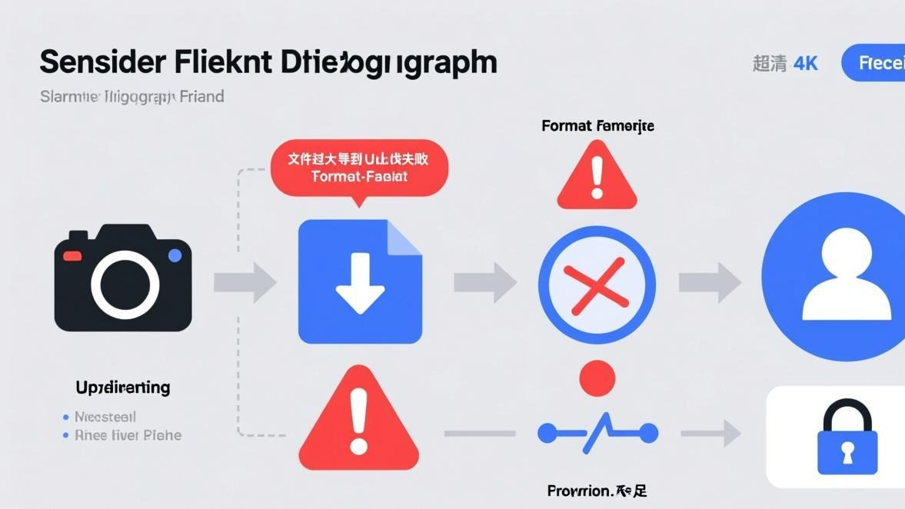
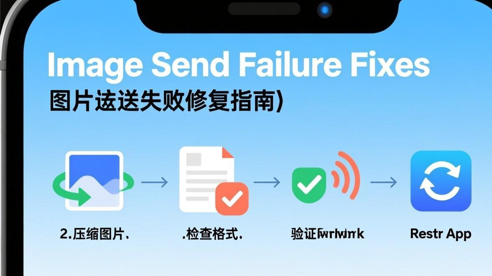

上周我在公司群里想发一张截图，结果一直提示"发送失败"，重试了五六次都不行。我当时还以为是公司WiFi的问题，换成手机流量还是不行。后来我又试了发别的图片，有的能发、有的不能发，搞得我一头雾水。
折腾了半天，终于搞清楚了——Telegram发图片失败其实有好多原因，不同的情况要不同的处理方法。如果你遇到的是图片加载转圈而不是发送失败，可以看看Telegram图片转圈的完整解决方法。现在我把所有可能的原因和对应的解决方法都写下来，你可以对照着自己的情况看看是哪一种。

先看看你是不是这几种情况
在开始折腾之前，先确认一下你的问题是哪一种，这样能少走弯路：
1. 所有图片都发不出去（不管什么图片、发给谁都不行） 2. 只有某些图片发不出去（比如大文件、某些格式的图片） 3. 只能发文字，图片和视频都发不出去 4. 发图片时一直显示"发送中"但就是发不出去 5. 提示"文件过大"或者"不支持的文件格式"
我遇到的是第2种情况——有些图片能发，有些发不出去。后来发现是文件太大的问题。不过不管你是哪种情况，下面的方法都覆盖到了，你可以按顺序试试。

原因一：图片文件太大了（最常见）
这个是我遇到的最多的情况。Telegram对发送的文件是有限制的——免费用户单个文件最大能发2GB，但这是理论上限，实际上如果你的网络不太好，发几百MB的文件就很容易失败。
而且还有个坑：Telegram在发送图片的时候，默认是会压缩图片的（如果你没关掉那个选项的话），但如果你选的是"原图"或者"不压缩"，那文件就会很大，发不出去的概率就很高。
步骤 1
先看看你要发的图片有多大：在手机相册里长按图片，选"详情"就能看到文件大小
步骤 2
如果超过50MB，建议先压缩一下再发（可以用手机自带的编辑功能，或者下个压缩软件）
步骤 3
发的时候注意一下：Telegram会问你要不要"压缩图片"，选"压缩"会小很多
步骤 4
如果你是iPhone用户，发图片的时候有个"质量"选项，选"自动"或者"低质量"会更容易发送成功
说个我踩过的坑：
有一次我想发一段视频，文件有300多MB，一直发不出去。我当时以为是网络问题，换了三个不同的WiFi都不行。后来才发现是文件太大了——Telegram虽然说支持2GB，但那是在网络非常好的情况下。像我这种网络环境，发超过100MB的文件基本都会失败。后来我把视频压缩到80MB以内，一次就发出去了。
原因二：图片格式不对（这个比较隐蔽）
Telegram支持常见的图片格式（JPG、PNG、GIF这些），但如果你要发的是一些比较冷门的格式（比如RAW格式、TIFF格式、或者一些专业相机拍的格式），Telegram可能就不支持了。
我弟是个摄影爱好者，他用单反拍的照片想发到Telegram上，结果一直发不出去。后来我发现他那些照片是RAW格式的（文件后缀是.CR2或者.ARW之类的），Telegram确实不支持。后来他先把照片导到电脑上转成JPG格式，再发到Telegram上就没问题了。
步骤 1
看看你要发的图片是什么格式的：在手机上点开图片详情就能看到
步骤 2
如果是不是JPG、PNG、GIF、WEBP这些常见格式，那就需要转换一下格式
步骤 3
最简单的方法：把图片截个图，然后发截图（截图会是JPG格式的）
步骤 4
或者用图片编辑软件打开，另存为JPG格式
原因三：网络问题（这个最烦人）
如果图片不大、格式也对，但还是发不出去，那基本就是网络的问题了。Telegram的服务器在国外，国内用的时候网络环境比较复杂，有时候就会连不上。
我自己遇到过好几次，就是Telegram能收消息（文字消息能正常收发），但发图片就是发不出去。这种时候文字消息能发，就图片发不出去，估计是图片上传需要的连接更稳定一点。
有个很简单的判断方法：你试试打开telegram.org这个网站，如果能打开，说明你的网络是能连上Telegram的服务器的；如果打不开，那就是网络根本连不上，图片肯定发不出去。
步骤 1
先试试切换网络：从WiFi换到移动数据，或者反过来
步骤 2
如果你用了某些网络工具，试试换一个节点（有些节点支持文字但不支持图片上传）
步骤 3
有个偏方：把WiFi关掉，等个10秒再打开，然后试试发图片
步骤 4
如果还是不行，试试重启一下路由器（我遇到过路由器长时间不重启就会导致某些连接不稳定）
我同事教我的一个方法：
我同事说他在发图片失败的时候，会先把图片保存到Telegram的"收藏"（就是那个Saved Messages）里，如果能保存成功，说明上传功能是正常的，然后再从收藏里转发给别人。我试了下，有时候确实有用——可能是直接发给别人的时候会走不同的服务器节点？我不太确定原理，但你可以试试。
原因四：Telegram的临时故障
这个比较少见，但也不是没有。Telegram有时候会有服务器故障，导致某些功能用不了。这种情况下，不是你手机的问题，是Telegram那边的问题，你只能等他们修好。
怎么判断是不是Telegram的问题？你可以去Twitter上搜一下"Telegram down"或者"Telegram outage"，如果很多人都在说Telegram用不了，那就是他们服务器的问题了。这种情况下你折腾自己的手机是没用的，只能等。
不过这种情况一般几小时就恢复了，我遇到过一次，大概等了3个多小时就自己好了。
原因五：手机存储空间不够了
这个原因比较隐蔽，我也是上次帮我妈看手机的时候才发现。她的手机存储空间只剩几百MB了，结果Telegram发图片一直失败（但收图片没问题，文字消息也没问题）。
后来我猜可能是因为Telegram在发送图片的时候，会先在本地做个临时处理（比如压缩、生成缩略图之类的），如果手机存储空间不够，这个临时处理就会失败，导致图片发不出去。
删了点照片腾出空间之后，Telegram发图片就正常了。所以这个也是可以检查一下——看看你手机还剩多少存储空间，如果只剩几百MB或者几GB了，可以清一清。另外，如果你还遇到文件下载卡住的情况，可以参考文件下载卡住的解决方法。
步骤 1
打开手机设置，看看存储空间还剩多少
步骤 2
如果少于5GB，建议清一下：删掉一些不用的视频、照片，或者清一下应用缓存
步骤 3
Android用户可以用"文件管理"里的"清理"功能，iPhone用户可以去"设置 -> 通用 -> iPhone存储空间"里看看哪些应用占空间最多
步骤 4
清完空间之后再试试发图片
电脑版Telegram发图片失败的特别说明
如果你是在电脑上用Telegram（不管是网页版还是电脑客户端），发图片失败的原因和手机版差不多，但还有几个电脑特有的问题：
第一，电脑版的Telegram有时候会卡住。我遇到过一次，就是Telegram电脑版能收消息，但发图片一直失败。后来我发现是Telegram电脑版卡死了（虽然界面看起来还正常），我把进程关掉重新打开就好了。Windows用户可以在任务管理器里找到Telegram进程，强制结束，然后重新打开。
第二，电脑版发图片有时候会因为防火墙或者杀毒软件拦截。如果你装了什么杀毒软件或者防火墙，可以试试暂时关掉，看看能不能发图片。如果关掉就能发了，那就是杀毒软件的问题，你可以在杀毒软件里把Telegram设为白名单。
第三，如果你用的是网页版Telegram（就是浏览器里打开那个），发图片失败可能是浏览器的问题。试试换个浏览器，或者用无痕模式打开看看。
我总结的几个预防方法
这次把我所有能发图片失败的问题都折腾了一遍之后，我总结了几个预防方法，你可以参考一下：
1. 发图片之前先看看文件大小，太大的话先压缩一下再发。我现在发图片之前都会看一下，超过20MB的我就先压缩，基本就没失败过了。
2. 如果你经常需要发大文件，可以考虑开个Telegram Premium（就是付费会员）。付费会员有些好处，比如上传速度更快、文件大小限制更高等，发大文件的时候会稳定很多。不过这个看个人需求，如果你不常发大文件，其实也没必要。
3. 定期清理一下Telegram的缓存。缓存太多有时候会导致各种奇怪的问题，包括发图片失败。我是每个月清一次（想了解详细操作可以看缓存深度清理教程），在"设置 -> 高级 -> 存储与数据"里就能清。
4. 如果你用的是Android手机，可以检查一下Telegram有没有"后台数据"的权限。有些Android系统会限制应用的后台数据使用，导致Telegram在后台的时候没法上传图片。在手机的"应用管理"里找到Telegram，把"后台数据"的权限打开就好了。
常见问题
好了，关于Telegram发图片失败的问题，我能想到的所有情况和解决方法都写在这里了。如果你试了所有方法还是不行，那可能是比较冷门的原因，你可以去Telegram的官方支持页面看看，或者去TG图片问题解决指南首页找找其他教程，或者问问身边懂技术的朋友。
还有，如果你找到了什么新的解决方法，也可以在评论里分享一下，这样其他人遇到同样问题的时候就能参考了。说实话，这种问题每个人的情况可能不太一样，多一个人分享经验，大家解决问题的概率就高一点。
📱 立即下载 Telegram 最新版
更新到最新版本可修复大部分图片加载问题，官方正版安全无捆绑。